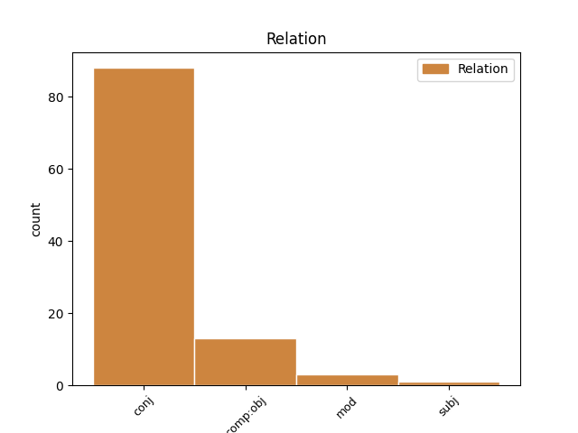
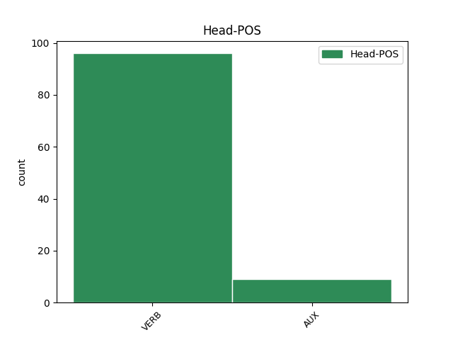
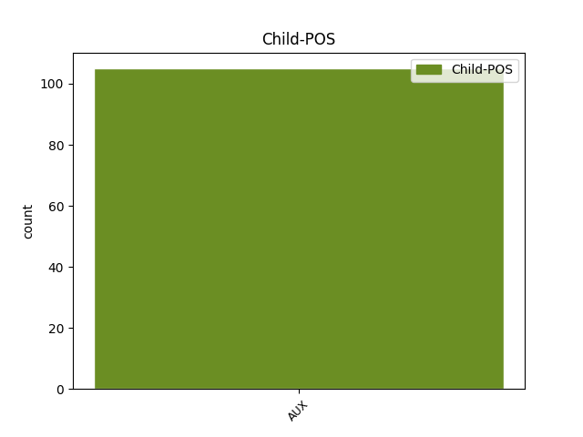

Distribution of features within this leaf



Agreement Rules sorted by frequency.
- When the dependent token is the conjunct(conj) of the head token, and the dependent token is VERB.
1 - _ _ _ _ 0 _ _ _
2 " _ _ _ _ 0 _ _ _
3 Żywią żywić VERB fin:pl:ter:imperf Aspect=Imp|Mood=Ind|Number=Plur|Person=3|Tense=Pres|VerbForm=Fin|Voice=Act 0 _ _ _
4 i _ _ _ _ 0 _ _ _
5 bronią bronić VERB fin:pl:ter:imperf Aspect=Imp|Mood=Ind|Number=Plur|Person=3|Tense=Pres|VerbForm=Fin|Voice=Act 3 conj _ SpaceAfter=No
6 " _ _ _ _ 0 _ _ _
7 . _ _ _ _ 0 _ _ _
1 Żołnierz _ _ _ _ 0 _ _ _
2 nigdy _ _ _ _ 0 _ _ _
3 nie _ _ _ _ 0 _ _ _
4 wie wiedzieć VERB fin:sg:ter:imperf Aspect=Imp|Mood=Ind|Number=Sing|Person=3|Tense=Pres|VerbForm=Fin|Voice=Act 0 _ _ _
5 , _ _ _ _ 0 _ _ _
6 kiedy _ _ _ _ 0 _ _ _
7 je jeść VERB fin:sg:ter:imperf Aspect=Imp|Mood=Ind|Number=Sing|Person=3|Tense=Pres|VerbForm=Fin|Voice=Act 4 comp:obj _ _
8 po _ _ _ _ 0 _ _ _
9 raz _ _ _ _ 0 _ _ _
10 ostatni _ _ _ _ 0 _ _ _
11 . _ _ _ _ 0 _ _ _
1 W _ _ _ _ 0 _ _ _
2 chwili _ _ _ _ 0 _ _ _
3 kiedy _ _ _ _ 0 _ _ _
4 Julia _ _ _ _ 0 _ _ _
5 wypowiedziała wypowiedzieć VERB praet:sg:f:perf Aspect=Perf|Gender=Fem|Mood=Ind|Number=Sing|Tense=Past|VerbForm=Fin|Voice=Act 11 mod _ _
6 te _ _ _ _ 0 _ _ _
7 słowa _ _ _ _ 0 _ _ _
8 , _ _ _ _ 0 _ _ _
9 dla _ _ _ _ 0 _ _ _
10 Andrew _ _ _ _ 0 _ _ _
11 zatrzymał zatrzymać VERB praet:sg:m3:perf Aspect=Perf|Gender=Masc|Mood=Ind|Number=Sing|SubGender=Masc3|Tense=Past|VerbForm=Fin|Voice=Act 0 _ _ _
12 się _ _ _ _ 0 _ _ _
13 czas _ _ _ _ 0 _ _ _
14 . _ _ _ _ 0 _ _ _
1 Ogromnie _ _ _ _ 0 _ _ _
2 interesowało interesować VERB praet:sg:n:imperf Aspect=Imp|Gender=Neut|Mood=Ind|Number=Sing|Tense=Past|VerbForm=Fin|Voice=Act 0 _ _ _
3 ich _ _ _ _ 0 _ _ _
4 , _ _ _ _ 0 _ _ _
5 co _ _ _ _ 0 _ _ _
6 z _ _ _ _ 0 _ _ _
7 tych _ _ _ _ 0 _ _ _
8 zabiegów _ _ _ _ 0 _ _ _
9 wyniknie wyniknąć VERB fin:sg:ter:perf Aspect=Perf|Mood=Ind|Number=Sing|Person=3|Tense=Fut|VerbForm=Fin|Voice=Act 2 subj _ SpaceAfter=No
10 . _ _ _ _ 0 _ _ _
Disagree Examples:
1 A _ _ _ _ 0 _ _ _
2 teraz _ _ _ _ 0 _ _ _
3 posłuchaj posłuchać VERB impt:sg:sec:perf Aspect=Perf|Mood=Imp|Number=Sing|Person=2|VerbForm=Fin|Voice=Act 0 _ _ _
4 , _ _ _ _ 0 _ _ _
5 co _ _ _ _ 0 _ _ _
6 ci _ _ _ _ 0 _ _ _
7 powiem powiedzieć VERB fin:sg:pri:perf Aspect=Perf|Mood=Ind|Number=Sing|Person=1|Tense=Fut|VerbForm=Fin|Voice=Act 3 comp:obj _ SpaceAfter=No
8 . _ _ _ _ 0 _ _ _
1 Błagam błagać VERB fin:sg:pri:imperf Aspect=Imp|Mood=Ind|Number=Sing|Person=1|Tense=Pres|VerbForm=Fin|Voice=Act 0 _ _ _
2 , _ _ _ _ 0 _ _ _
3 nie _ _ _ _ 0 _ _ _
4 chorujcie chorować VERB impt:pl:sec:imperf Aspect=Imp|Mood=Imp|Number=Plur|Person=2|VerbForm=Fin|Voice=Act 1 conj _ _
5 i _ _ _ _ 0 _ _ _
6 żadnych _ _ _ _ 0 _ _ _
7 kłopotów _ _ _ _ 0 _ _ _
8 nie _ _ _ _ 0 _ _ _
9 miejcie _ _ _ _ 0 _ _ _
10 ! _ _ _ _ 0 _ _ _
1 - _ _ _ _ 0 _ _ _
2 Chodź _ _ _ _ 0 _ _ _
3 , _ _ _ _ 0 _ _ _
4 chodź chodzić VERB impt:sg:sec:imperf Aspect=Imp|Mood=Imp|Number=Sing|Person=2|VerbForm=Fin|Voice=Act 0 _ _ _
5 , _ _ _ _ 0 _ _ _
6 pomogę pomóc VERB fin:sg:pri:perf Aspect=Perf|Mood=Ind|Number=Sing|Person=1|Tense=Fut|VerbForm=Fin|Voice=Act 4 conj _ _
7 ci _ _ _ _ 0 _ _ _
8 . _ _ _ _ 0 _ _ _
1 Chodź chodzić VERB impt:sg:sec:imperf Aspect=Imp|Mood=Imp|Number=Sing|Person=2|VerbForm=Fin|Voice=Act 0 _ _ _
2 , _ _ _ _ 0 _ _ _
3 Hari _ _ _ _ 0 _ _ _
4 , _ _ _ _ 0 _ _ _
5 podrzucę podrzucić VERB fin:sg:pri:perf Aspect=Perf|Mood=Ind|Number=Sing|Person=1|Tense=Fut|VerbForm=Fin|Voice=Act 1 conj _ _
6 cię _ _ _ _ 0 _ _ _
7 do _ _ _ _ 0 _ _ _
8 domu _ _ _ _ 0 _ _ _
9 . _ _ _ _ 0 _ _ _
1 Chodź chodzić VERB impt:sg:sec:imperf Aspect=Imp|Mood=Imp|Number=Sing|Person=2|VerbForm=Fin|Voice=Act 0 _ _ _
2 , _ _ _ _ 0 _ _ _
3 poszukamy poszukać VERB fin:pl:pri:perf Aspect=Perf|Mood=Ind|Number=Plur|Person=1|Tense=Fut|VerbForm=Fin|Voice=Act 1 conj _ _
4 czegoś _ _ _ _ 0 _ _ _
5 na _ _ _ _ 0 _ _ _
6 Trzynachę _ _ _ _ 0 _ _ _
7 . _ _ _ _ 0 _ _ _